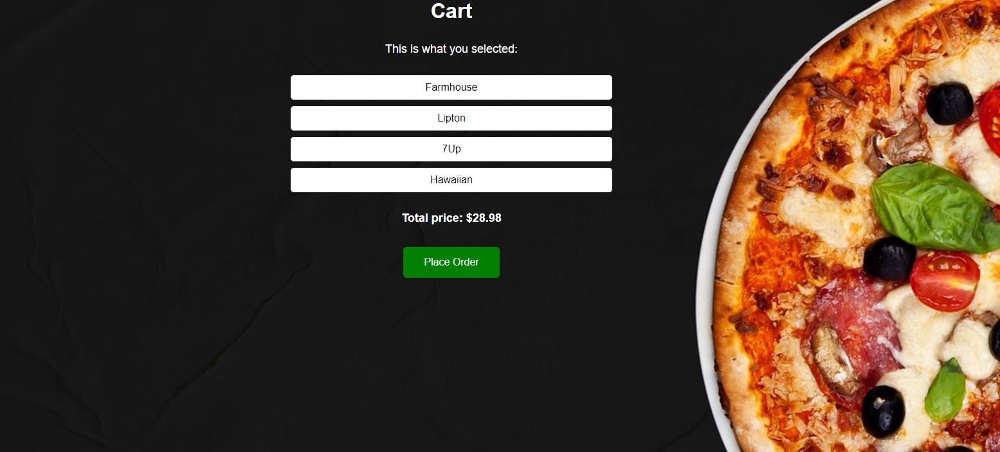
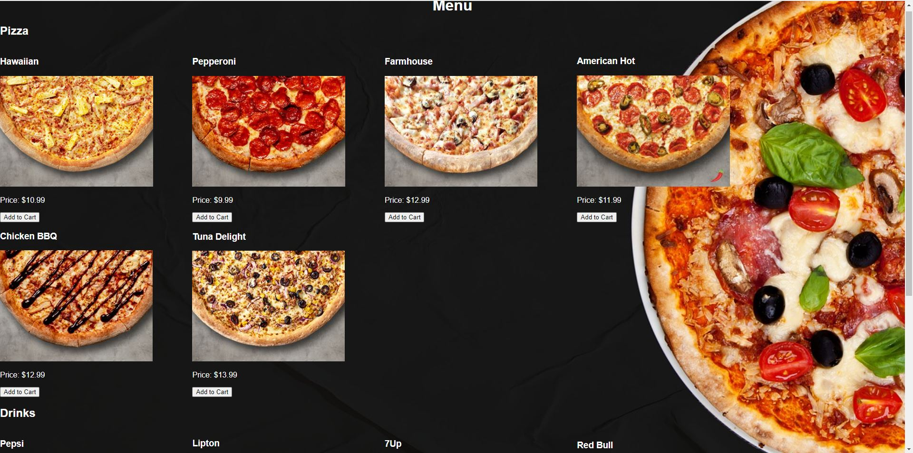
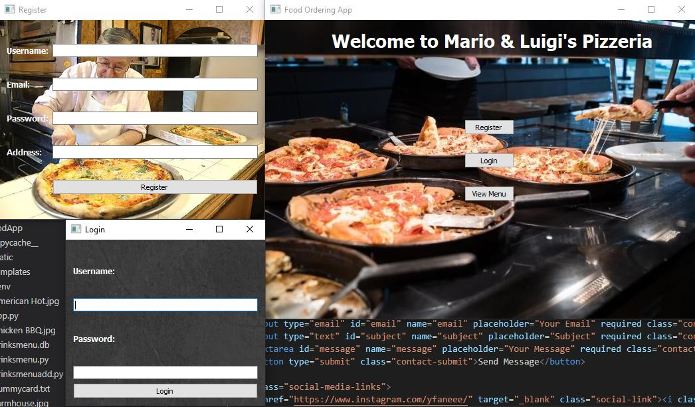
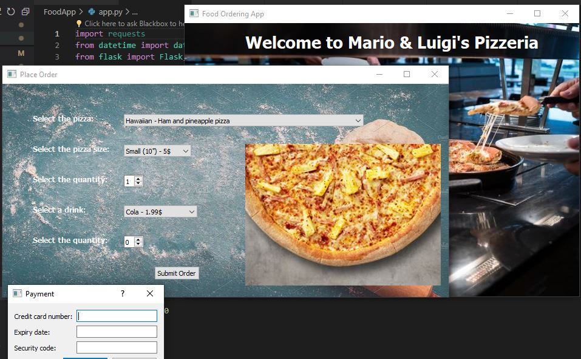

Food Ordering App
Project made with PyQt, Flask Application and MySql to improve the system of ordering food from a pizzeria.
Project Description
One of the projects I had to do in University was making a simple online web application using Flask.
The challenge creating this web app wasn't that complicated, so I decided to propose having an extra feature that will be made into a desktop application as well.
In developing the app, I used Python for the programming language and PyQt for the interface.
Among the features of the app, some of them are:
-ordering pizza or drinks
-payment system with a credit card number validator
-contact and support tabs
-creating an account and logging in to an existing one
Some other functionalities worth mentioning:
-online database for the accounts
-local database for the food and drinks menu
-used JSON for sending and recieving data to/from the server
Technical Learning Outcomes
In the realm of digital design, staying abreast of technological advancements and user expectations is paramount. My decision to transition from Tkinter to PyQt for the pizzeria project was a strategic move influenced by the evolving landscape of digital experience design. PyQt, with its comprehensive suite of tools and widgets, offered a more robust framework for creating sophisticated user interfaces. This shift was not just about leveraging advanced functionalities; it was a deliberate alignment with contemporary design standards that prioritize sleek, intuitive user experiences. By adopting PyQt, I embraced the industry's forward momentum, ensuring the pizzeria application was not only functional but also aesthetically aligned with modern expectations. This choice reflects a broader commitment to my development as a digital designer, underscoring the importance of adaptability and continuous learning in navigating the dynamic field of technology.
def submit_order(self):
pizza = self.combo_box.currentText()
size = self.combo_box_size.currentText()
quantity = self.spin_box.value()
drink = self.combo_box_drink.currentText()
drinkquantity = self.dspin_box.value()
payment_window = PaymentWindow(self)
result = payment_window.exec_()
if result == QDialog.Accepted:
if drink == 'No drink':
print(f"Ordering {quantity} {size} {pizza}")
order_data = {
'pizza': pizza,
'size': size,
'quantity': quantity,
'drink': ''
}
else:
print(f"Ordering {quantity} {size} {pizza} with {drinkquantity} {drink} drink.")
order_data = {
'pizza': pizza,
'size': size,
'quantity': quantity,
'drink': drink,
'drinkquantity':drinkquantity
}
url = 'http://127.0.0.1:5000/order'
headers = {'Content-type': 'application/json'}
r = requests.post(url, headers=headers, json=order_data)
if r.status_code == 200:
print('Order submitted successfully!')
else:
print(f'Error submitting order: {r.text}')
else:
print('Payment failed')
class PaymentWindow(QDialog):
def __init__(self, parent=None):
super().__init__(parent)
self.setWindowTitle('Payment')
self.setModal(True)
layout = QVBoxLayout(self)
form_layout = QFormLayout()
self.credit_card_number_edit = QLineEdit()
form_layout.addRow('Credit card number:', self.credit_card_number_edit)
self.expiry_date_edit = QLineEdit()
form_layout.addRow('Expiry date:', self.expiry_date_edit)
self.security_code_edit = QLineEdit()
form_layout.addRow('Security code:', self.security_code_edit)
layout.addLayout(form_layout)
buttons = QDialogButtonBox(
QDialogButtonBox.Ok | QDialogButtonBox.Cancel, Qt.Horizontal, self
)
buttons.accepted.connect(self.accept)
buttons.rejected.connect(self.reject)
layout.addWidget(buttons)
self.setLayout(layout)
The development of the pizzeria app epitomized the essence of the iterative design process. Starting with the basics of PyQt, I embarked on a journey of exploration and refinement. Structuring the application's windows as QWidget classes was a pivotal moment, enhancing the overall code structure for better navigability and readability. Yet, the true strength of the iterative approach was manifested in how user feedback informed continuous improvements. Each cycle of feedback and refinement brought the project closer to its ideal form: a user-friendly and visually appealing digital solution. This process was not merely about technical adjustments but about evolving the app in harmony with user needs and preferences, ensuring that every update contributed to a more engaging and intuitive experience.
class MainWindow(QWidget):
def __init__(self):
super().__init__()
self.setWindowTitle('Food Ordering App')
self.setGeometry(500, 100, 650, 450)
self.label = QLabel("Welcome to Mario & Luigi's Pizzeria", self)
font = self.label.font()
font.setPointSize(20)
font.setBold(True)
self.label.setFont(font)
self.label.setStyleSheet("color: white;")
self.label.move(100, 15)
self.button_register = QPushButton('Register', self)
self.button_register.move(300, 150)
self.button_register.clicked.connect(self.show_register_window)
self.button_login = QPushButton('Login', self)
self.button_login.move(300, 200)
self.button_login.clicked.connect(self.show_login_window)
self.view_menu_button = QPushButton('View Menu', self)
self.view_menu_button.move(300, 250)
self.view_menu_button.clicked.connect(self.show_menu_window)
self.button_place_order = QPushButton('Place Order', self)
self.button_place_order.move(300, 150)
self.button_place_order.clicked.connect(self.show_place_order_window)
self.button_place_order.hide()
self.button_support = QPushButton('Support', self)
self.button_support.move(300, 200)
self.button_support.clicked.connect(self.show_support_page)
self.button_support.hide()
self.button_logout = QPushButton('Log Out', self)
self.button_logout.move(300, 250)
self.button_logout.clicked.connect(self.logout)
self.button_logout.hide()
self.logged_in = False
self.username = None
oImage = QImage("Main.JPG")
sImage = oImage.scaled(QSize(651,451))
palette = QPalette()
palette.setBrush(QPalette.Window, QBrush(sImage))
self.setPalette(palette)
self.label = QLabel('', self)
self.label.setGeometry(50,50,200,50)
self.show()
def show_menu_window(self):
self.menu_window = MenuWindow()
self.menu_window.show()
def show_register_window(self):
self.register_window = RegisterWindow()
self.register_window.show()
def show_login_window(self):
self.login_window = LoginWindow(self)
self.login_window.show()
def show_place_order_window(self):
if not self.logged_in:
QMessageBox.critical(self, 'Error', 'You must be logged in to place an order.')
else:
self.place_order_window = PlaceOrderWindow(self)
self.place_order_window.show()
def update_login_status(self, username):
self.logged_in = True
self.username = username
self.label.setText(f'Welcome, {username}!')
self.label.move(285, 80)
font = self.label.font()
font.setPointSize(12)
font.setBold(True)
self.label.setFont(font)
self.label.setStyleSheet("color: white;")
self.button_register.hide()
self.button_login.hide()
self.view_menu_button.hide()
self.button_place_order.show()
self.button_support.show()
self.button_logout.show()
def logout(self):
self.logged_in = False
self.username = None
self.label.setText('')
self.button_support.hide()
self.button_place_order.hide()
self.button_register.show()
self.button_login.show()
self.button_logout.hide()
self.view_menu_button.show()
def show_support_page(self):
self.support_page = SupportPage()
self.support_page.show()
class MenuWindow(QWidget):
def __init__(self):
super().__init__()
self.setWindowTitle('Menu')
self.setGeometry(100, 100, 500, 400)
self.table = QTableWidget(self)
self.table.setColumnCount(2)
self.table.setHorizontalHeaderLabels(['Item', 'Description'])
self.table.horizontalHeader().setSectionResizeMode(1, QHeaderView.Stretch)
conn = sqlite3.connect('menu.db')
cursor = conn.cursor()
cursor.execute('SELECT * FROM menu')
items = cursor.fetchall()
self.table.setRowCount(len(items))
for i, item in enumerate(items):
for j, value in enumerate(item):
self.table.setItem(i, j, QTableWidgetItem(str(value)))
layout = QVBoxLayout(self)
layout.addWidget(self.table)
self.setLayout(layout)
The creation of interactive prototypes was a fundamental aspect of the pizzeria project, allowing for the practical application of coding skills and the development of meaningful user-machine interactions. Implementing a local database using sqlite3 laid the groundwork for robust data management, while integrating Firebase for online accounts introduced an element of real-time interactivity and connectivity. Perhaps most illustrative of the project's interactive prowess was the development of a credit card validator within the payment system. This feature not only enhanced the application's functionality but also served as a direct interface between the user's actions and the system's response, epitomizing the goal of creating a dynamic and responsive user experience. Through these technical endeavors, I honed my skills in Python and SQL, contributing to a product that was both technologically sophisticated and deeply engaging for the user.
import sqlite3
conn = sqlite3.connect('menu.db')
c = conn.cursor()
name = 'Tuna Delight'
description = 'mozzarella, tuna, red onions, sweet corn, black olives pizza'
c.execute("INSERT INTO menu VALUES (?, ?)", (name, description))
conn.commit()
conn.close()
import sqlite3
def create_menu_table():
conn = sqlite3.connect('menu.db')
cursor = conn.cursor()
cursor.execute('''
CREATE TABLE menu (
name TEXT,
description TEXT
)
''')
menu_items = []
cursor.executemany('INSERT INTO menu (name, description) VALUES (?, ?)', menu_items)
conn.commit()
conn.close()
create_menu_table()
def login(self):
username = self.textbox_username.text()
password = self.textbox_password.text()
if username == "" or password == "":
QMessageBox.warning(self, "Warning", "Username and Password must not be empty!")
return
ref = db.reference('users')
query = ref.order_by_child('username').equal_to(username)
result = query.get()
if result:
for key, value in result.items():
if value['password'] == password:
self.main_window.update_login_status(username)
QMessageBox.information(self, "Information", f"Welcome {username}!")
self.close()
return
QMessageBox.critical(self, 'Error', 'Invalid password.')
else:
QMessageBox.critical(self, 'Error', 'Invalid username.')
Central to the development of the pizzeria app was a steadfast focus on the end user. Each design decision, from the database structure to the implementation of a realistic payment system, was made with the target audience in mind. This user-centric approach ensured that the application was not only intuitive and accessible but also fully aligned with the needs and expectations of its intended users. By prioritizing the end user's experience at every stage of development, I ensured that the app was more than just a tool; it was a solution crafted to enhance the everyday lives of its users. This dedication to meeting user needs underscores the project's success and my commitment to creating digital products that genuinely resonate with their audience.




Professional Learning Outcomes
Navigating through the unforeseen absence of a key team member, I embraced a future-oriented approach to project management, ensuring that our ambitious timelines were respected without compromising the quality of our deliverables. This situation demanded not just quick adaptation but also a strategic reevaluation of our project plan. By redistributing tasks among the remaining team members and recalibrating our milestones, I took proactive steps to mitigate potential setbacks. This adaptability underlines a future-oriented mindset, emphasizing the importance of foresight in planning and execution. It underscores an understanding of the project's broader implications, ensuring that every decision made today serves the team's long-term objectives, thereby safeguarding the project against the unpredictable variables of collaborative endeavors.
The challenge of uneven contribution levels within the team presented an opportunity to engage in rigorous investigative problem solving. Faced with this issue, I adopted a pragmatic and critical stance, initiating discussions and exploring various strategies to realign our collective efforts with the project's requirements. This process involved not merely identifying the symptoms of the problem but understanding its roots—whether they stemmed from miscommunication, lack of motivation, or unclear expectations. By addressing these issues head-on and devising practical solutions, I was able to navigate the project back on track, ensuring continuity and maintaining the high quality of our output. This proactive approach to problem-solving was instrumental in overcoming obstacles and driving the project forward.
Throughout the project's lifecycle, I found myself naturally stepping into a role of personal leadership—taking initiative to fill gaps, support my peers, and drive our collective effort towards completion. This proactive stance was fueled by a strong sense of responsibility and a commitment to the project's success. Demonstrating personal leadership meant going beyond the call of duty, not just in completing my tasks but in uplifting the entire team. By embodying a can-do attitude, being receptive to feedback, and continuously seeking ways to enhance my contributions, I aimed to set a positive example for my peers. This approach not only ensured the successful delivery of our project but also fostered a collaborative and supportive team environment, where challenges were met with resilience and determination.
Effective communication and precise coordination were pivotal in managing the pizzeria project, especially given the diverse tasks and roles within our team. Recognising the importance of targeted interaction, I endeavored to maintain clear and open channels of communication, ensuring that everyone was aligned with the project's goals and timelines. This included not just task delegation but also the management of team dynamics—addressing any conflicts, clarifying expectations, and realigning efforts as necessary. By fostering an atmosphere of transparency and mutual respect, I helped to ensure that each team member's contributions were effectively utilized, keeping the project on course and upholding our commitment to quality and stakeholder satisfaction.